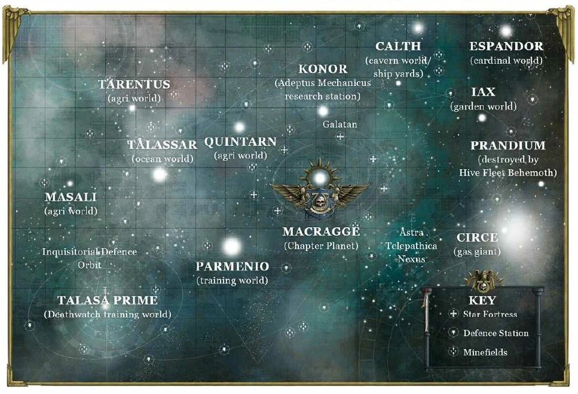

Agri-world
| Agri-world | |
|---|---|
| Class of Imperial world | |
 Harvest towers on an agri-world, from an early Administratum survey plate | |
| Administratum class | Agri-world[a] |
| Typical tithe | Exactis or Decuma grades, assessed as a share of the harvest |
| Population | Usually under 100 million |
| Ruler | A planetary governor, or directly the Administratum |
| Supplies | Hive worlds, forge worlds, the Astra Militarum, the Imperial Navy |
| Examples | Iax, Quintarn, Masali, Tarentus, Gereon, Prandium (destroyed 745.M41) |
An agri-world (also agri world) is a class of planet of the Imperium of Mankind given over almost entirely to the production of food. Hive worlds and forge worlds cannot feed their own populations, and the armies and fleets of the Imperium consume food on a vast scale. Agri-worlds supply them. Their continents are covered with fields, grazing lands, orchards and processing plants, and their harvests are shipped in bulk to the worlds that depend on them.[1][2]
Agri-worlds are sparsely populated by Imperial standards, usually with fewer than a hundred million people and only a few large cities. They are some of the most heavily tithed worlds in the Imperium, since their tithe is assessed as a share of the harvest, and many are ruled directly by the Administratum to ensure their output. The loss of a single agri-world can starve a sector, and the Imperium defends them accordingly.[2][3]
Characteristics
[edit]The Administratum assigns the class according to climate, soil, native livestock and other natural advantages. Many agri-worlds are temperate and fertile, with whole continents under a single crop or herd. Others are stranger. Some are ocean worlds whose seas are harvested for fish and algae; some are covered in edible fungus or swarms of nutritious insects; and a few are gas giants whose upper atmosphere supports flocks of flying creatures harvested for meat and eggs. Some exist only to provide clean water for nearby hive worlds.[2]
Agriculture is heavily mechanised. Great harvesting machines cross the fields, and grain is lifted to orbit by mass drivers, shuttles or orbital elevators to the bulk freighters of the tithe fleets. The labour force is drawn from the native population and often supplemented by indentured workers and servitors.[3]

Government and tithe
[edit]Many agri-worlds are governed by a planetary governor in the usual way, but a significant number are ruled directly by Administratum adepts so that their produce may be planted and harvested with the greatest efficiency. Their tithe is set as a fixed proportion of the harvest, which may be as much as nine-tenths. Shortfalls caused by blight, drought or war are treated as failures of duty, and governors have been executed for them.[2][1]
Agri-worlds are rarely required to raise many regiments, since their workforce is too valuable, but their Planetary Defence Forces are expected to guard the harvest against raiders. Their people are often regarded as simple and pious, and many agri-worlds are strongholds of the Imperial Cult.[4]
Strategic importance
[edit]Because the Imperium's population centres depend on them, agri-worlds are targets in war. Raiders seize their harvests, and invading armies destroy them to starve the hive worlds they feed. Tyranid hive fleets consume them first, since their rich biomass is what the fleets seek. The Departmento Munitorum keeps reserves of food and plans the supply of each campaign around the output of the agri-worlds nearby.[3][5]
Some agri-worlds also serve other purposes. The worlds of Ultramar are divided by function, and its agri-worlds feed the realm and the Ultramarines. Iax, once called the Garden of Ultramar, was a world of such fertility that farms and woodland covered its whole surface. In the Plague Wars of the early 42nd millennium it was turned into a hospital world, and the war ended there in a confrontation between Roboute Guilliman and the daemon primarch Mortarion.[6]
Notable agri-worlds
[edit]| World | Region | Notes |
|---|---|---|
| Iax | Ultramar | The Garden of Ultramar; attacked in the Plague Wars (early M42) |
| Quintarn | Ultramar | Agri-world of the realm |
| Masali | Ultramar | Agri-world of the realm |
| Tarentus | Ultramar | Agri-world of the realm |
| Prandium | Ultramar | Garden world, the Jewel of Ultramar; consumed by Hive Fleet Behemoth in 745.M41 |
| Gereon | Sabbat Worlds | Agri-world occupied by the forces of Chaos during the Sabbat Worlds Crusade (from 755.M41) |
| Hagia | Sabbat Worlds | Agri-world and shrine world of Saint Sabbat |
History
[edit]Many agri-worlds were terraformed in the Dark Age of Technology to feed the populous worlds of that era. When interstellar travel failed in the Age of Strife, some starved for want of machinery and others were overrun. The Great Crusade (c. 798.M30–005.M31) restored the trade between agri-worlds and hives, and the Administratum assigned many recovered worlds to agriculture. The Great Rift of 999.M41 broke supply lines across the galaxy, and famine has followed on many hive worlds that lost the agri-worlds that fed them.[2][7]
Life on an agri-world
[edit]The people of agri-worlds live by the seasons of planting and harvest. Many live in small communities scattered across the farmlands, under overseers who answer to the governor or the Administratum. The work is hard and the quotas strict, but agri-worlders are generally better fed and healthier than the workers of hive worlds. The arrival of the tithe ships is a great event, marked on many agri-worlds by festivals of thanksgiving to the Emperor. Agri-worlds are often isolated and conservative, and outsiders, including Imperial officials, are viewed with suspicion.[2][8]
Timeline
[edit]| Date | Event |
|---|---|
| Age of Technology | Many agri-worlds are settled as farming colonies in the first wave of Human expansion.[b] |
| Age of Strife | Isolated by Warp storms, most agri-worlds fall back to subsistence farming under local lords.[c] |
| Late M30 | The Great Crusade brings agri-worlds into compliance, and their tithes are set by the Administratum.[d] |
| M31 | During the Horus Heresy, many agri-worlds are drawn into the wars and their governors choose sides.[e] |
| M32–M35 | The Administratum reorganises the agri-worlds under sector governors and their tithe quotas.[f] |
| M36–M38 | Agri-worlds are often caught in the Black Crusades and the sector wars of the Waning.[g] |
| M41 | Agri-worlds supply the Astra Militarum with food and levies for the Time of Ending wars.[h] |
| Early M42 | Agri-worlds remain under the governor and the tithe, and many give their harvests to the Indomitus Crusade. |
See also
[edit]Notes
[edit]- ^ No numeric classification code is recorded in the open registry.
- ^ Estimated; no record gives an exact year.
- ^ Estimated; no record gives an exact year.
- ^ Estimated; no record gives an exact year.
- ^ Estimated; no record gives an exact year.
- ^ Estimated; no record gives an exact year.
- ^ Estimated; no record gives an exact year.
- ^ Estimated; no record gives an exact year.
References
[edit]- ^ a b Codex Imperialis (rev. 980.M41). Adeptus Terra.
- ^ a b c d e f Administratum (rev. 997.M41). Liber Classificatus Mundi: Registry of the Worlds of Man. Administratum Archive, Terra.
- ^ a b c Departmento Munitorum (rev. 992.M41). Tactica Logistica: On the Provision of Armies. Terra.
- ^ Imperial Infantryman's Uplifting Primer (rev. 990.M41). Departmento Munitorum.
- ^ Lexicanum Martialis. Officio Militaris.
- ^ Records of the Indomitus Crusade (ongoing). Office of the Lord Commander.
- ^ Administratum (c. 012.M42). Report on the Supply of the Imperium Sanctus. Terra (restricted).
- ^ Liber Ecclesiasticus (M37). Adeptus Ministorum.